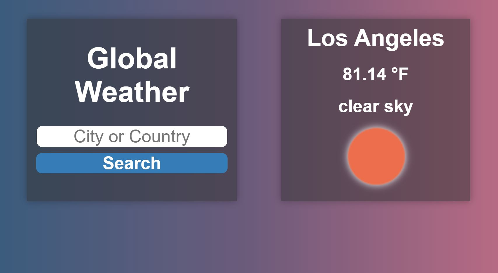
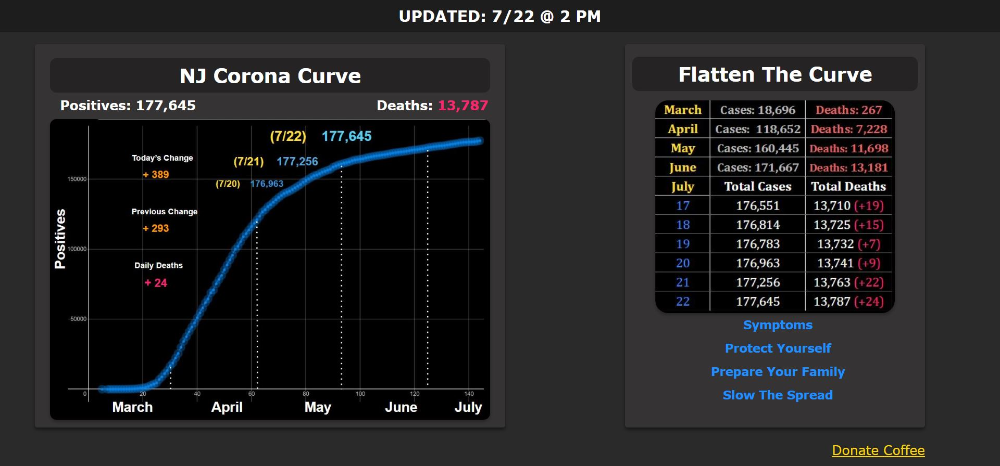
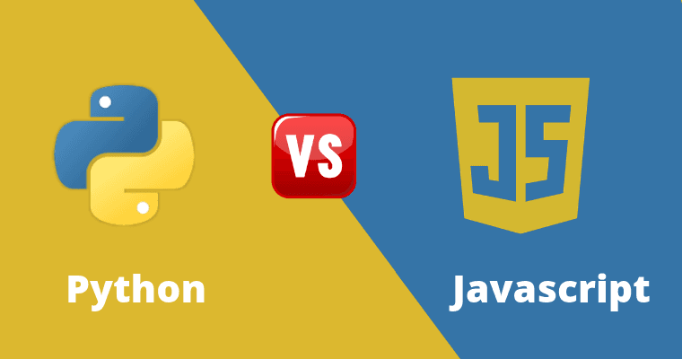

Scattered
Thinking
The Power of APIs
One of my favorite aspects of web development is the ongoing work on APIs and their ease of use. Afterall, if someone's already written a program, why spend valuable time just to recreate the same functionality? Through this principle, devs have been able to create massive projects because they don't have to be concerned with re-coding things over and over. Its a bit like creating functions in code and calling them multiple times, but the best part is that most APIs are free.
"Nothing beats free."API creators intentionally set this model in order to foster a world of possibilities. By providing the pieces, devs are able to transform their own works into complex programs that feature multiple functionalities. One relevant example is the explosion of Covid tracking APIs provided by local, state, and federal initiatives. They allow users to retrieve up-to-date data instantly for their applications. As the world continues to grow bigger, we can always count on APIs to modularize every aspect of life.
The Thirst for Accessible Data
At the start of this pandemic, no one could quite grasp the magnitude of the situation before things really blew up. In the third week of January, the first COVID case was identified by the CDC in the state of Washington. Just under 2 months later, the first positive case was reported in New Jersey. Although my home state began to take precautionary measures right away, I knew the virus would have to take its course.
"Life finds a way."Immediately, my insatiable thirst for data began. I needed to know the number of positive cases and deaths and hotspots and daily changes and ... well, you get the picture. At the time, however, the state was not ready to begin data crunching. During those early days, the data was available on none other than Governor Phil Murphy's Twitter page. Every day, he would send out a tweet chronicling the number of new cases, deaths, and where the patients were from. Although I love twitter as much as the next person, this wasn't accessible enough and lacked a lot of vital information and visuals.
Seeing this, I got to work on creating NJ Corona Curve over the next few days. To my surprise, it became a talking piece in my local community, where it was serving 400 users every week. Whenever my parents and family friends had their daily facetime calls, the trends highlighted by the chart were the center of their conversations. The bold curve of the graph also bridged the data gap among older viewers and allowed them to easily see the fluctuations and crazy jumps of the virus. Back on the stateside, they were able to launch the COVID dashboard after 3 weeks of Governor Murphy's tweets. However, they didn't have a graph feature until much later, so NJ Corona Curve still lives to this day, keeping up with the latest NJ COVID trends.
Elon Musk and my 'almost' medical degree
I went to a vocational high school. This meant instead of art class or music class, each student had their own vocation and a 'shop' to report to for 3 hours every day. You could find me in the Medical Arts shop, where the curriculum was centered around learning the ins and outs of a career in medicine. The first year taught medical terminology, the second taught dentistry, the third taught nursing, and the fourth taught emergency medicine. But the catch is, I wasn't here by choice. To appease my parents I had taken this route. In Bangladeshi culture, being a doctor is above almost everything - similar to many other east asian countries. The other catch was that you declared your vocation before enrolling and could not switch once accepted.
I continued, and 3 years went by. This was around 2017, and it was near college application season. Around the same time, Elon Musk had exploded into the mainstream internet for his memes and viral comments. I stumbled upon an article about him from Business Insider, and things were never so clear. A group of students were in the TESLA factory and met Mr. Musk. He was asked by a student for his best tip for those wanting to launch a startup. Musk's words were striking and echoed through my screen:
"If you need inspiring words, don't do it."In fact, I had only stayed committed to Medical because I had to. I frequently found myself at a lack of motivation.
One of the only things I enjoyed was my then hobby - learning HTML and CSS to create static pages. But I knew this was it. When it came time to apply for college, I sat down with my parents and had a long talk. They weren't tech savvy and didn't understand everything, but they could see how tech was the future. From then on, I chose to pursue a Computer Science degree and embark on a path towards web design. I'm very grateful for that question to Mr. Musk, because otherwise, this site would probably never have existed!
Finally, Feasable & Functional Finance
Although the COVID-19 pandemic has placed the world at a standstill, the universities are still churning and the tuitions remain. As an
undergrad nearing their graduation date (May 2021 couldn't come sooner), this further leads to an inevitable focus on the concept of money.
Admittedly, this topic has always been very close to my heart. Growing up in an immigrant family, I never had the same options as other
children. To this day, for example, the majority of my clothes and personal belongings come from the local Thrift Store
(my fashion secret's finally out). However, starting my undergrad journey gave money a whole new level of meaning.
No matter what, I found myself stressed from the constant need to track every cent and every dollar which came my way. At the time,
I hadn't realized the exact toll this was taking on my studies and my health, but I would later recognize the negative side effects of
this habit. Those days are behind me now, but it has naturally led me to be responsible with finances, maintain fiscal duties, and most
importantly - keep a sane head. I found the lessons I learned to be extremely relevant now more than ever. With vital grocery runs
and toilet paper shortages around the country, its important to manage expenses and the available sources of income for everyone. This inspired
me to create my latest WebApp, so you never have to ask, Wallet Suffice?
Should Beginners Start With Python Or JavaScript?
People who have never coded before often find themselves wanting to start by making websites. Afterall, its what you can show off to others and share online. Hard coded
command line programs are less fancy and can't be shared so easily. But this leaves the beginner at a crossroad. Although HTML can be quickly learned, static webpages are
boring. This means the users can't interact with the page, and there aren't any buttons to click or any actions the site can perform. All there is to do is view the page.
This is where the beginner becomes a novice.
A crucial choice here is choosing Python to be the back-end language, or the code that makes the page functional. Its easy to
go in this direction, since any source will tell you of the simplicity of Python:
- It is quickly learned
- Has simple syntax
- An entire library of tutorials for just about anything
< script > yourscript.js < /script > Your functional programming is added to the page, and that's when the fun begins!
Beating CSS Styling Issues with indirection

As with many things in Computer Science, designing an output isn't always as straightforward as it seems. Whether it be on the command line or an HTML5 page, developers rely on one common trick to make their programs display information. This trick is an 'instance of indirection'. In low level languages this might look like an extra line to reformat the data type of a variable before it is printed out. In CSS however, it is a completely different ballgame. The issue isn't whats displayed, but how it is displayed. When a webpage is opened on the client side, the HTML page is being read from top to bottom and displayed accordingly. This means although two elements are put side by side, the element which is coded first will always appear on top of the second element. That's why in CSS there are instances of indirection. Some of the most common are floating elements, changing the display inline, or even manually changing the pixel positions of the element. However, this is all too much just for a trivial task of putting two elements side by side. Developers realized this, and as a result, CSS introduced Flexbox. This new technique allowed web designers to code the page into boxes and then choose to place each element in whatever box they saw fit. Flexbox is still an instance of indirection, and proves that basic CS principles can go a long way.
- © Thenvir Aklakh